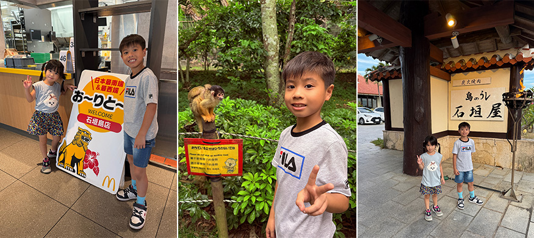
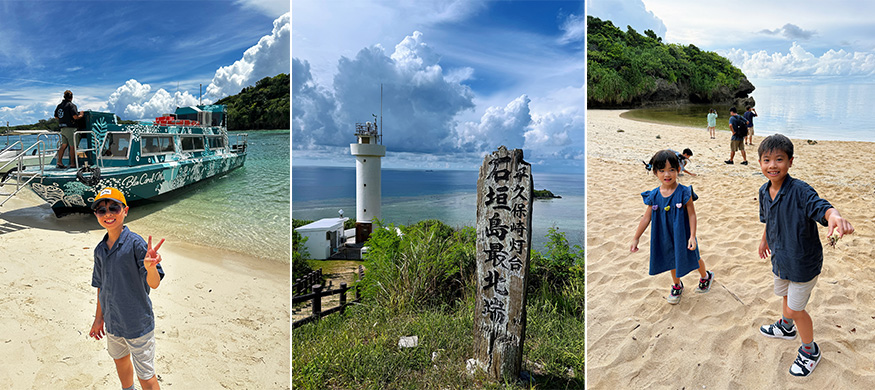
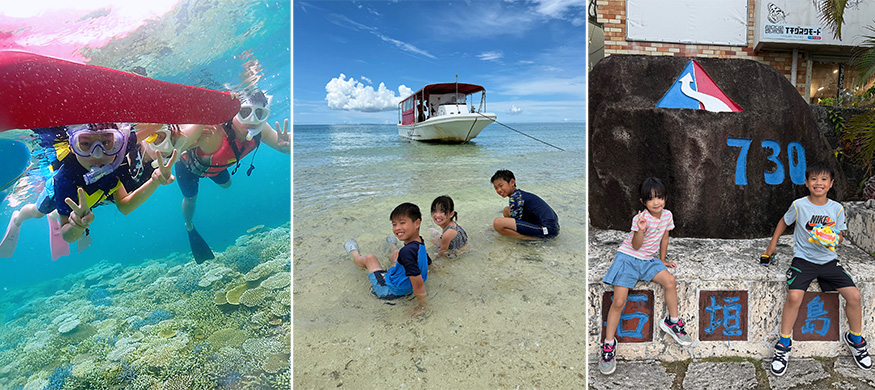

趁著孩子們暑假想找一個不用長途飛行，就能享受藍天、碧海與慢步調的度假地，「石垣島」正是最完美的選擇。從台灣直飛石垣島，航程只要短短 40 分鐘，比搭高鐵到高雄還快，甚至比大費周章開車去墾丁渡假還要輕鬆方便，不需要花費大半天在交通上，就能置身擁有世界級海景的度假天堂。
一下飛機，迎接我們的是湛藍天空以及帶著鹹味的舒服海風。石垣島不僅擁有透明如寶石般的大海、美得像明信片般的沙灘，還有美味的石垣牛。島上景點彼此距離不遠，一天之內可以安排自然景觀、文化景點、美食與購物，不必趕行程也能玩得相當充實。加上道路寬敞、車流量少、路況單純到不行，即使是第一次挑戰日本自駕，也能很快適應，因此非常推薦親子家庭或自駕新手前來旅行。
第一天：抵達石垣島，開啟海島假期
抵達石垣空港後，辦理租車便正式展開自駕初體驗。
第一站先來到「日本最南端麥當勞」，雖然餐點與台灣相差不大，但能在日本最南端打卡，還是格外有紀念價值，吃著熟悉的薯條、看著窗外明亮的陽光，度假的心情也跟著展開。
吃完飯，我們來到「多田浜海岸」，第一次看到石垣島的大海就忍不住驚呼，海水清澈見底，藍色層次豐富，陽光照射下閃耀著夢幻光芒，讓人完全放鬆。
下午前往「石垣島鐘乳洞」。鐘乳洞內溫度比戶外舒服，走進去會有種短暫逃離烈日的輕鬆感。歷經二十多萬年形成的鐘乳石，在燈光映照下呈現不同風貌，天然形成的地質景觀十分壯觀，大自然鬼斧神工令人讚嘆，也讓孩子們看得目不轉睛，算是石垣島很有代表性的自然景點之一。
接著，來到充滿琉球文化特色的「八重山民俗村」，園區完整保留沖繩傳統建築與八重山文化，不僅能欣賞傳統三線琴、傳統舞蹈，也能深入了解當地歷史。其中最受大小朋友歡迎的，就是可愛的松鼠猴園。一走進園區，活潑好奇的松鼠猴就在樹梢間穿梭跳躍，有些甚至直接跳到遊客肩膀上，近距離互動讓大家又驚又喜，也成為這裡最難忘的體驗之一。
來到石垣島，當然不能錯過超人氣的「米魯米魯冰淇淋」，店家使用當地新鮮水果及牛奶製作冰淇淋，口感濃郁滑順，每一口都充滿石垣島的天然風味，一邊欣賞無敵海景，一邊享用冰淇淋，幸福感瞬間滿分。
晚餐則安排品嚐期待已久的石垣牛，百年古民宅改建的「石垣屋」，保留濃厚日式古宅氛圍，在炭火慢慢燒烤下，石垣牛細緻柔嫩、入口即化，豐富油花散發自然甘甜，香氣十足卻絲毫不膩，不愧是日本知名和牛之一，每一口都令人回味無窮。吃飽之後再到當地大型超市「MaxValu 八重山店」採買水果、飲料與零食，感受日本超市購物的樂趣，也為第一天畫下完美句點。
 |
第二天：最美海灣與石垣島最北端
第二天一早，先到在地老字號「知念商會」買超人氣飯糰，簡單的飯糰卻充滿樸實美味，許多在地人也會特地前來購買，開啟元氣滿滿的一天，是石垣島不能錯過的特色早餐。
接著來到石垣島最具代表性的景點「川平灣」，這裡被譽為石垣島最美海灣，也是米其林三星景點。海水呈現夢幻的藍綠漸層，搭配潔白沙灘、翠綠小島與藍天白雲，站在川平風致公園展望台俯瞰整片海灣，美得像一幅畫。由於川平灣禁止游泳與戲水，因此我們搭乘玻璃船欣賞海底世界，不用下水，就能清楚看見色彩繽紛的熱帶魚、珊瑚礁以及清澈見底的海底景觀。孩子們一路興奮地尋找各種海洋生物，驚呼聲此起彼落，也讓這段旅程充滿歡笑。
午餐來到人氣名店「明石食堂」，也是許多人造訪石垣島必吃的美食之一。熱騰騰的八重山拉麵，湯頭濃郁甘甜，燉得入口即化的豬肉更是令人印象深刻，即使需要排隊，也讓人覺得非常值得。
吃飽飯後，一路向北開到石垣島的最北端「平久保崎燈塔」，潔白燈塔佇立在斷崖峭壁上，放眼望去是無敵海景令人心曠神怡，是石垣島最具代表性的風景之一，也是許多人心中的必拍景點。回程途中順遊「玉取崎展望台」，從高處俯瞰遼闊海岸線，能感受到石垣島不同角度的美，眼前盡是療癒的藍色風景，是欣賞海景的絕佳視角，讓人忍不住多停留一會兒。
傍晚前往「青之洞窟」，站在沙灘遠望青之洞窟周圍的海岸景色，周圍保留著天然的岩石地形，沒有過度開發，反而多了一份自然與寧靜，陽光透入水下折射出夢幻的湛藍光芒，美得像仙境，也為隔天的浮潛行程增添更多期待。
 |
第三天：最期待的浮潛與幻之島
這趟旅行最期待的，也是最不能錯過的行程，就是石垣島浮潛。船長帶領我們到周邊珊瑚礁海域浮潛，石垣島擁有世界知名的珊瑚礁海域，海水能見度非常高，一下水就像進入另一個世界。五彩斑斕的珊瑚鋪滿海底，各式熱帶魚自在悠游，甚至還能近距離與魚群一起游泳，每一幕都像紀錄片般夢幻。即使不會游泳，只要穿著救生衣，在教練帶領下也能安心享受海洋的魅力，因此非常適合親子一起體驗。
接著搭船前往僅在退潮時短暫浮現的「幻之島」，這座沙洲會隨著潮汐出現與消失，因此有了夢幻的名字。潔白細緻的沙灘搭配環繞的蔚藍海洋，踩在上面簡直像走在夢裡，美得讓人捨不得離開。
結束精彩的水上活動後，回到市區漫步於「公設市場」，感受石垣島最道地的生活氛圍。市場裡販售各式伴手禮與特色商品，非常適合慢慢探索。晚上則以碳火燒肉名店「石垣庵」作為旅程最後的大餐。再次品嚐入口即化的石垣牛，每一口依舊令人驚艷，也為這趟旅行留下最美味的回憶。
 |
第四天：依依不捨，期待再次相見
四天三夜的旅程轉眼就結束了，回到石垣空港準備搭機返台時，心裡滿是不捨。石垣島最迷人的地方，不只是景色漂亮，而是整趟旅行帶來的放鬆感，沒有都市的喧囂，沒有匆忙趕行程的壓力，有的是乾淨透明的大海、悠閒緩慢的生活步調，以及處處都能感受到的純樸與自在。
最讓人驚喜的是，這裡距離台灣真的非常近，就能享受不同的海島風情，不論是親子旅行、情侶度假，或是想安排一場放鬆的海外小旅行，不用請長假、不用舟車勞頓，就能擁抱整片蔚藍的大海與頂級和牛，石垣島都是非常值得推薦的目的地。